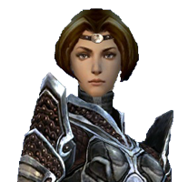

Athena Dominus - Warrior and Adventurer
These are excerpts from the journal of a great warrior named Athena Dominus. Unfortunately, only about 10 of the nearly 100 pages from the journal were readable. As far as our historians can tell, these events occur near the year 1070 AE (Mouvelian calendar) which is the beginning of the era of the Flameseeker Prophecies. The entries are grouped into the historical eras that they appear to have come from.
The Flameseeker Prophecies
. . . damned Charr! All of our lives here in Ascalon we have had to concentrate all of our resources and activities to fighting them off. I wish those cat-brained lugs and all of their “rituals” and “legions” would all just . . .
. . . Northern Wall has stood for centuries and helped protect us, but the Charr strength and persistence, along with time, have taken their toll. King Adelbern believes the wall will hold them off for far longer, but Prince Rurik is not so sure. By necessity, and out of pride for my city and its people, I have decided to do whatever I can to make life better . . .
. . . report to Devona tomorrow. She is in a small village out of the southern gates. It's not killing Charr, but I want to do anything I can to make life better for all Ascalonians. If that means rounding up pigs, clearing fields of wurms, or fighting off the occasional grawl attacks, then that is what I will do. Some day I'll be able to take on the Charr . . .
. . . Farmer Mac sure was mad. But what was I to do? His bull was ravaging the countryside and could have hurt someone. I felt so bad for Mac that I found a devourer egg for him. A devourer probably won't replace his bull, but . . .
. . .a monk named Mhenlo at the abbey. He's definitely not from around here. He offered to teach me . . . While I am a warrior at heart, I accepted his offer. He showed me how to divine healing powers and forces that would ward and harm the undead. I think I like . . .
. . . going to be a powerful warrior like Devona. To see her standing there with her hammer makes me glad I'm not a Charr. I will make Balthazar proud. Perhaps someday we will fight side . . .
. . . I met a small girl named Gwen just outside the gates. We became friends when I recovered her flute from the skale that inhabit the river near the gates of Ascalon. The flute was broken, but I was able to save up some money and I bought here a new one from a local vendor. I also found a cape for her to wear and she seems to like red iris flowers, so I pick some for her whenever I see them. She felt obligated to reciprocate the gift-giving so she offered me a tapestry shred that is her favorite thing in the whole world. I promised her I would treasure it as she had . . .
. . . fire and lightning rained down from the sky. It was horrible. Much of Ascalon has been destroyed. The once green pastures are now nothing but scarred, barren land, with some strange crystals growing all about. I can't fathom how many were killed. I know the Charr shaman are powerful, but I didn't think they were capable of this. There must be some other . . .
. . . who can bear arms is being asked to report to the Wall. There are many breaches and the Charr are poised to attack just to the north. Tomorrow I will go on a mission lead by Prince Rurik himself. His disdain for the Charr is unmeasured and . . .
. . . argument with his father. Even though we found the mouthpiece for the horn Stormcaller, it does not seem to be our salvation as the legends foretold. The army of Charr still march on the Wall and the city of Rin has already fallen. King Adelbern still believes we can defeat . . .
. . . against his fathers wishes, Prince Rurik is planning and exodus for any who wish to follow him. We will cross the Shiverpeak Mountains and seek refuge in Kryta . . .
. . . I came across it when I was looking for my sharpening stone. If Gwen were here, I'd show it to her so she could see that I kept my promise.
Factions of Cantha
The next entries that could be read find Athena in Cantha.
. . . Kaineng City is amazing. It's twice as beautiful as Mhenlo had described it to me. From the boat I can see its silken banners and lanterns hanging all over the city. It is the seat of the Emperor after all . . .
. . . find out why Master Togo has summoned us . . .
. . . we were attacked by some vile mutated citizens. The locals call them the “afflicted,” and it appears it is some type of plague ravaging the . . .
And much later, she finds herself allied with the Kurzicks, a Canthan faction that lives in the Echovald Forest.
. . . everything appears to be made of stone. I have been told it was the Jade Wind that made it this way. Apparently there is a sea to the east that has been completely turned to jade by the same . . .
. . .help of Master Togo and Mhenlo, we were able to get the Kurzicks and Luxxons to work together in order to put an end to this plague. But it all may have been for naught. We sought the council of the great dragon Kuunavang, only to find that Shiro's corruption had enveloped her also. We will travel to the palace immediately to inform . . .
Nightfall of Elona
Athena was also present in the desert lands of Elona around the time that Abaddon was rising in influence.
. . . we arrived right in the middle of some turmoil. The nations here are divided and warring against each other. Under the command of Kormir, we stormed Gandara, the palace of Varesh Ossa. We had her backed against the wall until she summoned a horde of demons in the name of Abaddon . . .
Only one other Elonian passage was legible, from many pages later.
. . . even though we defeater her, Varesh was able to open a portal to the Realm of Torment, where Abaddon is imprisoned. Nightfall is upon us. Our only option is to travel to the Realm of Torment and challenge Abaddon and his forces before they can enter into our realm . . .
Eye of the North Alliance
Towards the very end of the journal, we find evidence that Athena was present for the Asurans emergence from their underground caverns and beginning of Norn and human interaction.
. . . established by the Ebon Vanguard. The Eye of the North has become the base of operations for them in the Far Shiverpeaks. They are very near the Norn, who I thought were only a myth for most of my life. I would love to meet them. I have heard they are fierce warriors who pride themselves on battle and the foes they have . . .
. . . have been experiencing strange earthquakes in Lion's Arch lately. When I went to investigate, I found a chasm outside of the city and crawled down inside. As expected, there were some undead, but I knew they weren't the cause of the earthquakes. I was able to locate a group of dwarves who were working with some explosives. Out of nowhere, a small mouse-like creature, who I later learned is named Vekk, comes rushing in telling us about “destroyers” and that we need to run. We made it to . . .
. . . finally made it to the Eye of the North. As much as I was looking forward to seeing the Eye, I never expected the surprise I received when I approached the scrying pool in the center. There was a young woman there who seemed to remember me but I did not recognize her. When she told me her name was Gwen I nearly cried. I quickly rummaged through my bags and found the tapestry shred she had given me so many years . . .
. . . to defeat these Destroyers is to rally the races of the north into an alliance. I've got quite the task ahead of me. I'm glad I will have Gwen, Ogden, and Vekk . . .
. . . Jora. She is a Norn warrior who has lost standing amongst her people because we helped her with the Great Hunt. There has to be some way for us to help her reclaim her status . . .
. . . dwarves turned to stone . . .
. . . the ghost of Droknar, the last king of the united dwarven tribes. He says that the time of the dwarves is near its end and thanks me for . . .